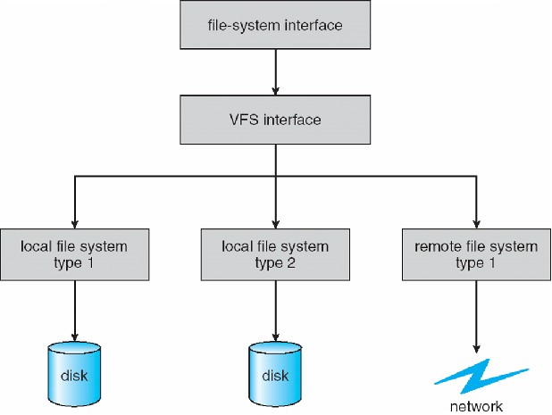
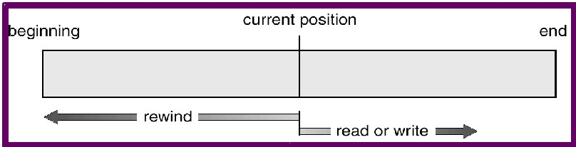
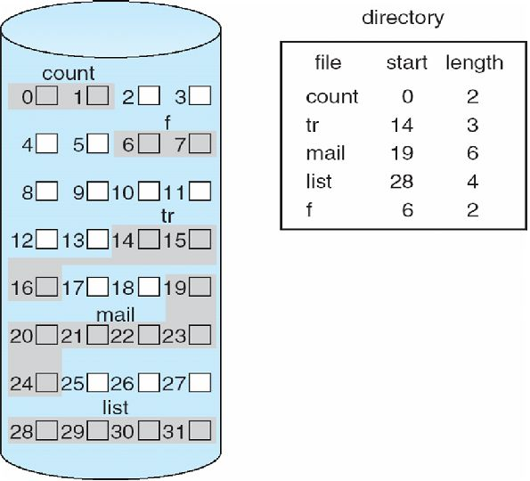
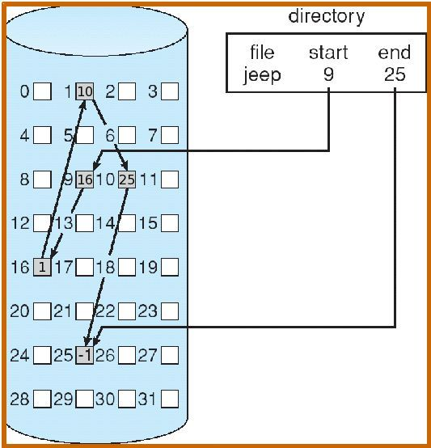
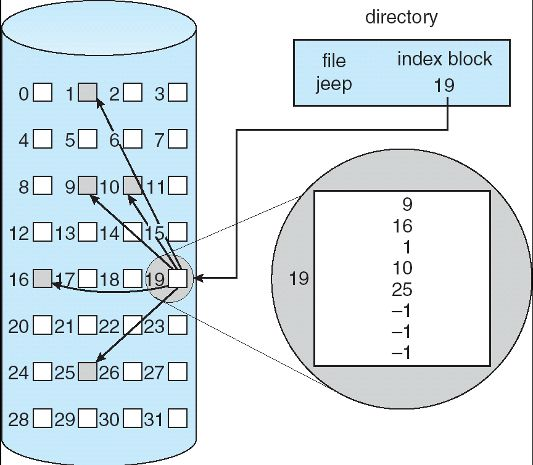
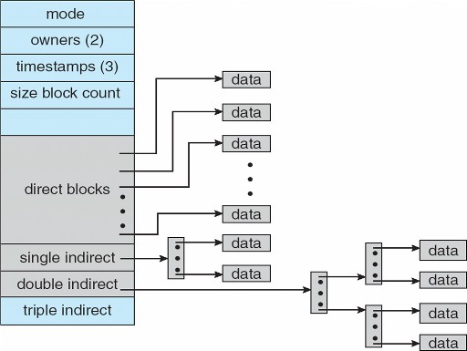
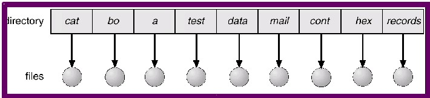
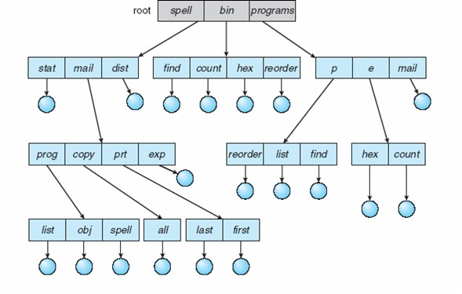

File Systems
Some important questions first:
- What is a file?
- What determines the type of the file?
- How do you name a file?
- Where do files live?
- What is the structure of a file?
- What kinds of operations can you perform on a file?
The file concept
- The computer needs a way to persist data.
- When the computer is powered off, all data/code in memory is lost.
- Files are storage units that exist on an external medium (hard drives, USB drives, floppies, CD/DVD, tape, etc.)
- Files are a collection of bytes stored on secondary storage.
- Files can contain anything; it's up to the consumer of the file to understand the format.
- C/C++ source code
- executable files (ELFELF
and PE)
- graphic files (JPEG, PNG, GIF, etc.)
- audio files (WAV, MP3, FLAC, etc.)
- movie files (MPEG, AVI, etc.)
- word processor documents
- spreadsheets
- text files
- game assets
- ... an infinite variety ...
- Some files have a very simple structure (e.g. text files), some are very complex (e.g. word processor documents)
- The program file is one way to detect the type of file.
(/etc/magic, /usr/share/file/magic.mgc)
- Since all storage devices are different (sometimes radically different), we need a consistent way of dealing with files.
- Essentially, we need some kind of "file API" to manipulate files (wherever and however they are stored).
File attributes (metadata)
- name - The most basic attribute would be the name. (This is for humans only; OS doesn't use it.)
- Each operating system has its own convention and rules for naming files.
- Upper case vs. lower case, file extensions, legal/illegal characters, etc.
- id - Some unique way of referencing the file.
- location - Information about where the file is stored.
- size - The number of bytes required to contain all of the file's information
- time and date - Various timestamps (create, modified, accessed)
- type - Maybe some information describing the kind of data stored in the file.
- protection - Some files should not be accessible to all users or some users should have limited access.
File names (on Windows)
- A UNCUNC path (Universal Naming Convention) looks like this
\\server\volume\directory\...\file
or the longer version that some Windows systems support:
\\?\UNC\server\volume\directory\...\file
- Each component of the UNC is separated by a backslash (not a forward slash).
- server is the name of a machine on the network
- volume is the name under which some directory is shared as
- any directory can be shared (made available to other machines)
- under any name (the default name is the directory name)
- then comes a sequence of directory names
- finally comes the name of the file
- Example:
dir \\jessica\games\COD2\main\players\Bubba
Volume in drive \\jessica\games is Games
Volume Serial Number is E8F5-FE0F
Directory of \\jessica\games\COD2\main\players\Bubba
12/04/2005 08:49 AM <DIR> .
12/04/2005 08:49 AM <DIR> ..
12/04/2005 06:46 AM 5,952 config.cfg
04/02/2006 02:18 PM 4,859 config_mp.cfg
12/04/2005 08:49 AM <DIR> save
2 File(s) 10,811 bytes
3 Dir(s) 12,248,276,992 bytes free
- All of the parts together make up the path of the file (e.g. config.cfg)
\\jessica\games\COD2\main\players\Bubba\config.cfg
- Windows also has a concept of a drive that is mapped to the local machine and given a single-character name.
- The above UNC might look like this on the local computer (in this example, jessica):
G:\Data\Games\COD2\main\players\Bubba\config.cfg
- The local path G:\Data\Games is shared as games and this is what other computers see.
- Recent versions of Windows are no longer required to use drive letters for each physical drive.
- In some cases you can use forward slashes instead of backslashes when using the driver-letter technique.
File names (on Unix):
- Follow a simliar, and somewhat more consistent pattern
- A path looks like this:
/dir1/dir2/dir3/.../file
- the first / is the root of all files on the system
- then comes a sequence of directory names
- finally the file name is specified
- Unix does not have the concept of a local drive with a single-character name.
- All files are accessed like the example above
Remote (network) files
- Networking is ubiquitous, even for casual or non-technical users.
- How do we access remote files?
- There are many ways, for example:
- These allow transparent access to remote files.
- One way they achieve this:
- A remote machine exports a directory
- Local machine mounts remote directory over a local directory
- For example, local machine mounts XYZ's exported home directory on a local directory /mnt/xyz/home.
- then /mnt/xyz/home/... access a file on the remote machine.
- From the user's perspective, all of the files in /mnt/xyz/home/ appear to be on the local drive.
Overview
- Files are a collection of bytes stored on secondary storage, but the questions is:
- How are they stored and accessed?
- The answer is determined by the particulars of the "file system".
- A file system provides methods to:
- create and delete files
- allocate and free blocks of bytes to files.
- assign names to files.
- organize files into directories.
- read and write contents of files.
- There are probably 100 different types of file systems
- Linux (by default) supports more than 40 types!
- Some popular file systems:
- Window's systems:
- FATFAT (old DOS, smaller USB drives)
- 8.3 file names
- No permissions
- RASH attributes (Use the attrib command to view them.)
- FAT32FAT32 (32-bit version for Windows, larger USB drives)
- FAT12, FAT16, FAT32, VFAT
- Extensions (e.g. longer filenames, larger files)
- NTFSNTFS (Modern Windows)
- Completely different
- Very powerful and modern: compression, quotas, journaling, encryption, etc.
- All NT-based systems, i.e. NT, 2000, XP, Vista, 7, 8, etc.
- ReFSReFS Resilient FS (Future Windows)
- Implements a subset of NTFS
- Early version don't support compression, quotas, encryption
- Designed for very large files and huge number of files.
- Designed "not to fail"
- Linux:
- ext2ext2
(second extended file system, standard until several years ago, no journaling; still good for flash drives)
- ext3ext3 (ext2+journaling)
- ext4ext4 (enhanced ext3)
- Plus about 40 others including FAT and NTFS
- Other popular file systems:
- BtrfsBtrfs
B-tree file system using copy-on-write, created by Oracle Corporation for Linux.
- Here's a video that
shows where Btrfs puts files on spinning media.
- JFSJFS
Journaled File System, created by IBM for their AIX operating system.
- ReiserFSReiserFS
A general-purpose journaled file system created by Hans Reiser.
- XFSXFS
Extents File System, a high-performance journaling file system created by Silicon Graphics for their IRIX operating system.
- ZFSZFS
Zettabyte File System, created by Sun Microsystems and so named because it could store up to 270 bytes (about 1021 bytes).
ZFS focuses on data integrity.
- All of these file systems are supported on Linux.
- Mac OS X:
- APFSAPFS (macOS, successor to HFS+)
- HFS+HFS+ (previously used in Mac OS X, successor to HFS)
- Linus Torvalds has
an opinion about HFS+. (Caution: Linus uses a lot of colorful words in his opinions!)
- Common systems:
- Flash-friendly file systems
- F2FSF2FS
- A new filesystem (developed by Samsung) that is targetted at flash-based media (flash drives, SSDs, SD cards, etc.)
- Many optimizations in filesystems are done to deal with head movement and rotational latency, which
don't exist in solid-state media.
- More detailed information:
- Some features of advanced file systems: (these used to be "add-ons" to some filesystems)
- copy-on-write
- transparent compression
- encryption
- built-in RAID
- defragmentation
- transactions and roll back
- variable block sizes
- snapshots
- Some very simple benchmarks (using rsync and this script):
Copying a 2 GB file
(2,147,483,648) | Copying ~500 MB of files
Linux kernel 3.2.34 (~40,000) |
|---|
Time MB/s
---------------------
xfs 0:19 110
btrfs 0:19 110
hfs+ 0:19 110
ext4 0:21 95
ext2 0:22 95
jfs 0:24 87
FAT32 0:25 84
reiserfs 0:25 84
ext3 0:27 78
NTFS 0:40 53
zfs 0:47 45
|
Time MB/s
---------------------
btrfs 0:05 79
ext4 0:07 58
hfs+ 0:12 35
FAT32 0:14 30
reiserfs 0:14 30
jfs 0:18 25
zfs 0:24 18
ext3 0:25 18
ext2 0:25 17
xfs 0:27 15
NTFS 2:23 3
|
- ZFS is not part of the script. This was done manually for experimentation using the defaults.
Surprisingly (or maybe not), when compression was turned on, the time was about 22.5 seconds
to copy the Linux kernel source.
- Also, the reason for its poor performance is due to the fact that I'm using ZFS in FUSE mode
(Filesystem in User Space), which has a lot of overhead. A native-Linux port is in progress
and will hopefully be widely available soon.
- Some basic file operations are open, read, write, seek, delete, truncate.
| Operation | System call |
|---|
|
Create a file
|
open
|
|
Read from a file
|
read
|
|
Write to a file
|
write
|
|
Move the file cursor
|
lseek
|
|
Delete a file
|
unlink
|
- open - Open an existing file or create a new file.
- First, space in the file system must be found for the file,
- Second, an entry for the new file must be made in the directory.
- The directory entry records the name of the file and the location in the file system.
- There is a "cursor" which keeps track of where the next read/write will take place.
int open(const char *path, int oflag, ... );
read
- Uses an open file's file descriptor.
- Reads in the specified number of bytes.
- Once the read has taken place, the cursor is updated.
ssize_t read(int fildes, void *buf, size_t nbyte);
write
- Uses an open file's file descriptor.
- Writes the specified number of bytes.
- Once the write has taken place, the cursor is updated.
ssize_t write(int fildes, const void *buf, size_t nbyte);
lseek
- Moves the cursor the specified number of bytes through the open file.
- The cursor is bidirectional so can move forward and backward through the file.
off_t lseek(int fildes, off_t offset, int whence);
unlink
- Used to delete a file from the filesystem.
- May not actually delete the file if the file is in use.
- When the number of references to a file is 0, the file is deleted from the system.
int unlink(const char *path);
- Every file system type provides its own API (Application Program Interface) for operations.
- And they're all different!
- But we (programmers and users) don't want to deal with those differences.
- We want a file to be a file (a collection of bytes) anywhere with a few generic operations.
- To tame this potential for chaos, the OS provides one generic interface
- to ALL files
- on ANY file system
- on ANY device
- We'll call that interface the "Virtual File System".
|  |
| Operating System Concepts - 8th Edition Silberschatz, Galvin, Gagne ©2009 |
- A top level API presents a unified view of files and operations on files. (open, read, etc.)
- A "virtual file system" level will translate operations into specific operations for any type of file system.
- As we've seen, there are many file system types.
Hardware view of a file
- A file is a sequence of blocks.
- A block is fixed length, often 512 or 4096 bytes.
- Operations are all block operations:
- Allocate or free blocks for a file's sequence of blocks.
- Read block X.
- Write block X.
- But programmers want:
- byte oriented, not block oriented files
- sequential access (both reads and writes)
Software view of a file
- A file is (logically) a sequence of bytes.
- An open file:
- Has one or more blocks cached in memory by the OS
- Has a current position byte pointer.
- Reads, writes, seeks, ... act at the current position on the "in memory" cached blocks.
- The OS takes care of reading/writing blocks.
- The current position is a property of an open file, not of the file itself.
|  |
| Operating System Concepts - 8th Edition Silberschatz, Galvin, Gagne ©2009 |
Structure of a file
- Somewhere on disk is a FCB (File Control Block), which is a structure containing various pieces of file information.
- The contents of a file are stored in one or more (often MANY more) blocks on the disk.
- The FCB must provide some way to record and access those blocks.
- There are various ways:
- Contiguous allocation - generally a bad idea
- Growing a file will run into a limit.
- Deleting or shrinking a file will fragment the disk.
- Size must be declared when created.
- Requires a scheme to compact free space (otherwise there is external fragmentation).
- However, the advantages are efficient access to a file's contents (random access) and easy disk management.
- Kind of like arrays in C/C++. (One-time allocations, random access, can't grow)
|  |
| Operating System Concepts - 8th Edition Silberschatz, Galvin, Gagne ©2009 |
- Linked allocation - generally works well (like a linked list)
- Files can grow or shrink with almost no limit.
- File size need not be declared when created.
- One disadvantage is that direct access to ANY block is not possible (no random access), only sequential access is supported (just like linked lists).
- Some implementations don't need an ending block number because the next block pointer in that block won't point to anything.
- However, having a "tail pointer" may make appending to the file faster.
(You don't have to walk the entire list looking for the end.)
|  |
| Operating System Concepts - 8th Edition Silberschatz, Galvin, Gagne ©2009 |
- Indexed allocation - put all pointers together into an index block.
- All the advantages of linked allocation plus direct access to any block.
- Allows random access to any block/byte of the file when using fixed-size blocks (the norm).
|  |
| Operating System Concepts - 8th Edition Silberschatz, Galvin, Gagne ©2009 |
Unix/Linux/Mac OS X example
- An inode has a fixed size.
- It has room to reference a fixed (small) number of data blocks. (Direct pointers to data)
- Then it uses a pointer to an index block of pointers to data blocks. (Single-indirection, pointer to pointer to data)
- Then it uses a pointer to an index block of pointers to index blocks of pointers to data blocks. (Double-indirection, pointer to pointer to pointer to data)
- Then it uses a pointer to an index block of pointers to index blocks of pointers to index blocks of pointers to data blocks. (Triple-indirection, pointer to pointer to pointer to pointer to data)
- Simplified view of an inode and its data blocks:
(structurestructure)
(struct inode)
|  |
| Operating System Concepts - 8th Edition Silberschatz, Galvin, Gagne ©2009 |
- Typically, there are 15 pointers in the inode: 12 direct pointers, 1 single-, 1 double-, and one
triple-indirect pointers.
- The size of the largest file is dependent on the size of a block and the size of a block pointer.
- For example, having 8K (8192 bytes) blocks and 8-byte block pointers, the number of pointers
in a block is 8192 / 8 = 1024.
- Having "only" triple indirection puts size limitssize limits on the file system.
Directories
- A directory is a file just like any other "plain" file.
- It has bytes stored in scattered blocks (like any other file).
- It is described by a FCB (like any other file)
- However, it is marked as type "directory" rather than "plain file", so it responds to special directory operations rather than read/write operations.
- Logically, a directory file contains a list of pairs of file name and file info:
- filename1: pointer to a FCB (inode or MFT entry)
- filename2: pointer to a FCB (inode or MFT entry)
- The "files" in the diagram below represent the inode. (The inodes point to the actual data blocks on the disk.)
|  |
| Operating System Concepts - 8th Edition Silberschatz, Galvin, Gagne ©2009 |
- A hierarchical view of a directory structure:
|  |
| Operating System Concepts - 8th Edition Silberschatz, Galvin, Gagne ©2009 |
List of file systems.
Comparison of file systems.
The Unix (or Cygwin) stat command.
Nice introduction to BtrFS with lots of good
information. Great place to start.
More btrfs information.
A good article about how to Run ZFS on Linux
from IBM's website.
ZFS on Linux home page.
Why ZFS and Btrfs are better than ext4.
SleuthKitThe Sleuth Kit™ (TSK) is a library and collection
of command line tools that allow you to investigate disk images.
Overview
Facebook hires several Btrfs developers,
starts using it now. openSUSE 13.2 is also using it as
the default filesystem.